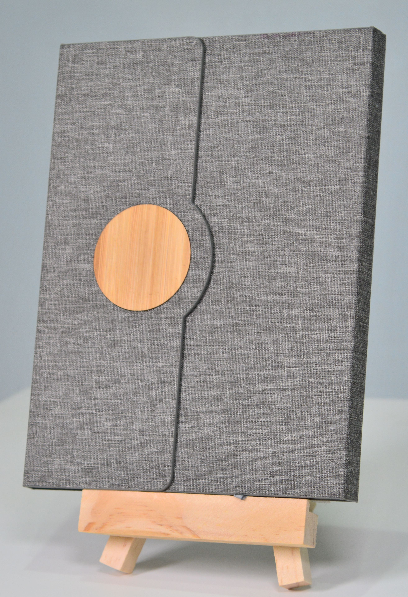
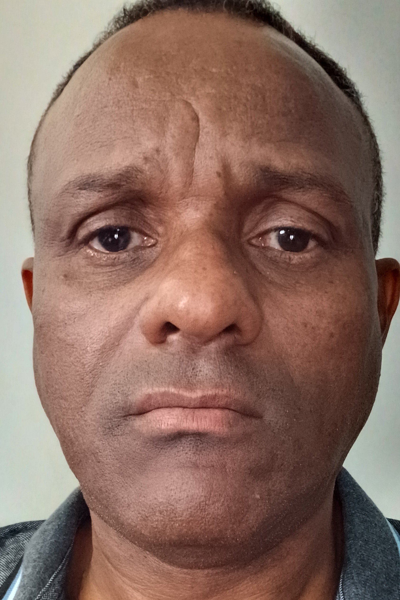
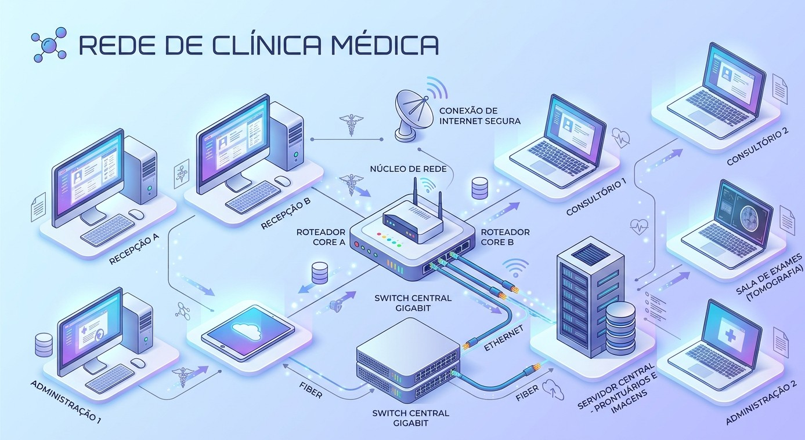
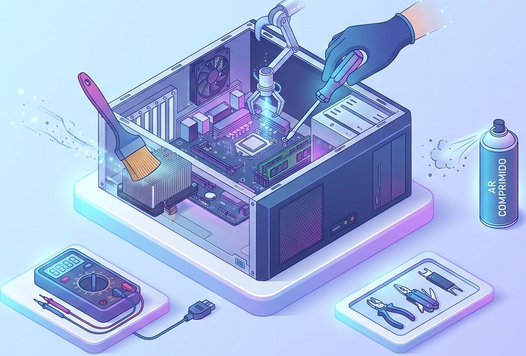

Meus Dados Pessoais
- Idade: 61 anos
- Data de Nascimento: 22/09/1965
- Escolaridade: Segundo Grau Técnico
- Formação: Técnico em Eletromecânica


Técnico em Telecomunicações
Técnico em Eletromecânica
Tecnologia da Informação

Instalações Elétricas em geral
Redes de computadores
Instalação de câmeras e alarmes
Manutenção e instalação de hardwares e softwares

Efetuado projeto de rede de uma clínica médica, composta por especialistas, recepcionistas, diretor Administrativo e Financeiro e técnicos de TI.
Foram instalados sete computadores, quatro impressoras, seis telefones VOIP, um Switch, dois roteadores e um Servidor Windows Server. Executada toda a instalação de cabos de rede, conexões e instalação de Racks e Bastidores.Configuração do switch e roteadores.

Manutenção de computador, incluindo limpeza, instalação de hardware, formatação e instalação de sistema operacional Linux. Encontrei uma falha ao carregar a Bios.EFetuei a substituição da pilha e configurei o setup. Durante a instação do Linux, encontrei algumas falhas e reinstalei o Linux por duas vezes
"Sempre à disposição para inovar, crescer e aumentar a credibilidade em relação aos serviços prestados. Focar na satisfação do cliente, é a meta a ser alcançada além da divulgação e sucesso"